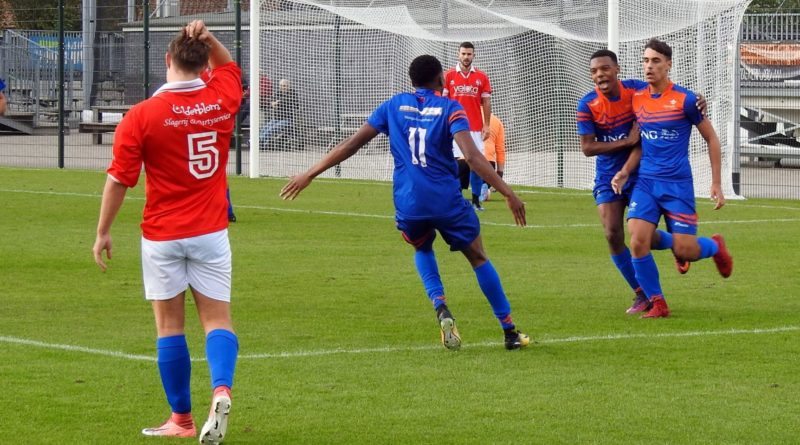
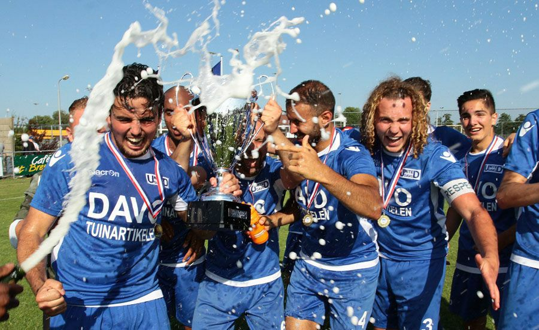
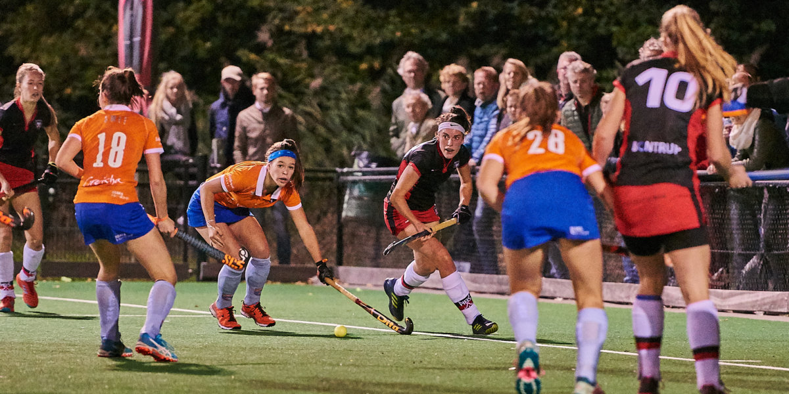

Sports
Sportclubs in Haarlem

Olympia Haarlem has a variety of sports to offer: Soccer, baseball, badminton, billiards and darts. They have 3 soccer fields and 1 baseball field.

United DAVO offers soccer and baseball practice for all ages. With 2 soccer fields and 1 baseball field there is enough room for everyone.
Gym Haarlem is one of the most popular gyms in Haarlem. They offer kickboxing, thaiboxing, fitness, joga, MMA and more.
Smile Sport, the coziest gym of Haarlem. They offer personal training, massages and crossfit.
Royal row and sail club is located next to The Spaarne, a river where rowing and sailing is practiced.
Ryo Un Kai is a karate club that focusses on the body and the spirit.
AikiDojo is the name of one of the aikido club in Haarlem. "Aikido is not a technique to fight with or defeat the enemy. It is a way to reconcile the world and make human beings one family." - Morihei Ueshiba
Hwa-Rang Dragonhas a variety of martial arts to offer such as Taekwondo, mudo, Brazilian jiu jitsu and FightFit.

HBSis a hockey club located in Bloemendaal, a village next to Haarlem. They offer hockey practice for all ages.
SV De Blinkert offers handball practice for all ages and for disabled persons since 1954.